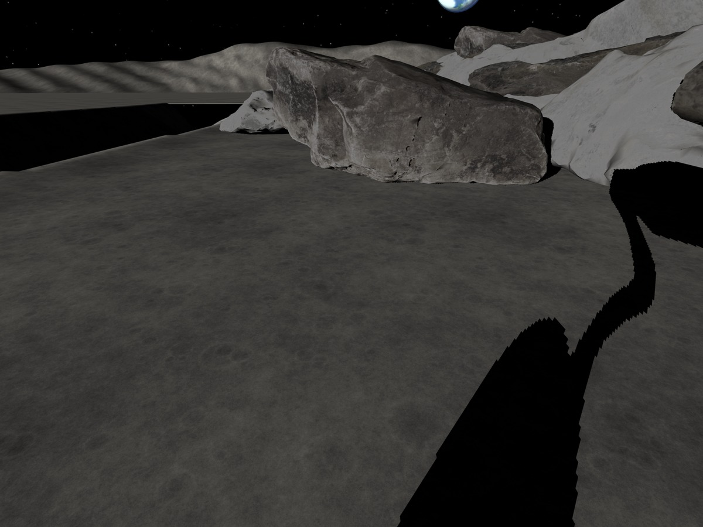

NEXT ZENITH / AHOLO 全球 3D AI 黑客松
先想，再迈。
给月面机器人，找一条能走的路。
高石的背面交给 Lux3D；挡住车轮的门槛，用腿迈过。
- 01 观察
- 02 核对 3D
- 03 预演
- 04 绕行
- 05 迈腿
- 06 抵达
01 / 先看见问题
前面有路，石头后面呢？
机器人只能拍到石头的一面。Lux3D 把照片变成完整 3D；你需要核对它，再决定能不能走。
机器人观察 / 原 R1 记录照片

只看见正面，不能确定背面占了多少路。下一步：查看这次观测的真实 Lux3D 生成结果。
机器人相机 · 实时
在模型世界里试走
驾驶
轮腿操作一次抬一条腿
支撑与重心由控制器辅助，四条腿的抬、移、落分别由你触发。
任务完成 / 你的决定怎样变成行动
你先想过，机器人才能迈出这一步。
查看原项目的实验与对照 ↗BeforeStep 做了什么？
Lux3D 生成完整形状。我们把它对齐机器人观测、筛选候选、放进物理世界预演，再把通过的路线交给轮腿控制器执行。
Next Zenith 的 BeforeStep 参赛体验 · MuJoCo 实时仿真 · 本次成绩独立于原 R1 / R2 / R3 实验。